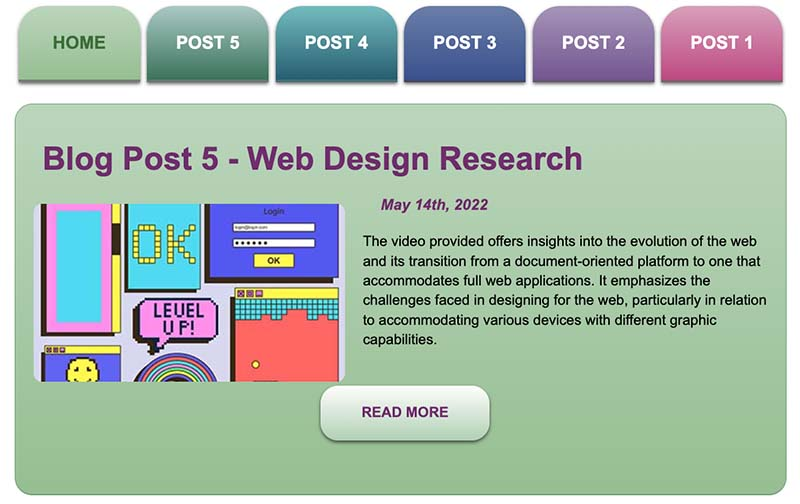
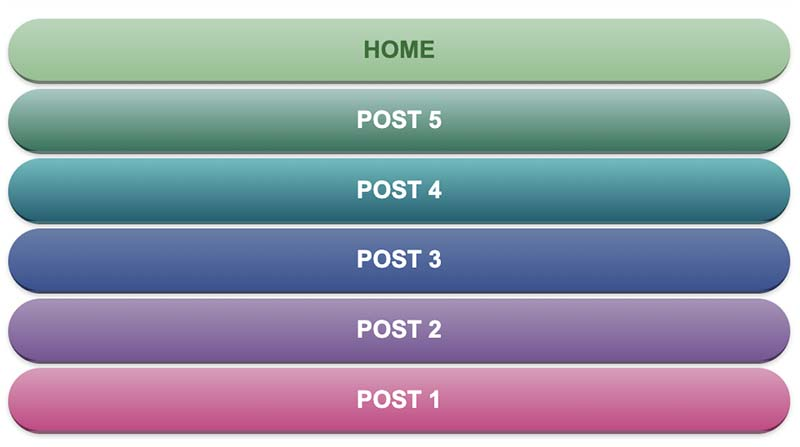

Design a portfolio showcasing the development of a one-page blog project, demonstrating expertise in UI/UX design, HTML, and CSS. The goal is to create a visually appealing and well-structured blog that allows for the addition of posts throughout the project term. The design should prioritize mobile layout initially and progressively incorporate more advanced styling for larger screens.
Throughout the development process, I focused on four key aspects: design, typography, color, and graphics. By implementing a clear hierarchy through headers and sub-headers, I ensured that the content was easily understandable. Creative typography choices enhanced the overall communication and contributed to a cohesive design. A sophisticated use of color, devoid of contrast issues, effectively conveyed the intended message. Graphics were carefully selected to add personality to the page without detracting from its overall aesthetic.
In the coding aspect, I employed semantic markup to maintain a clear understanding of the document's structure. I followed proper organization of files and adhered to naming conventions, providing appropriate documentation. Mobile-first coding techniques were implemented, with an emphasis on efficiency in CSS coding to ensure maintainability and concise code.
